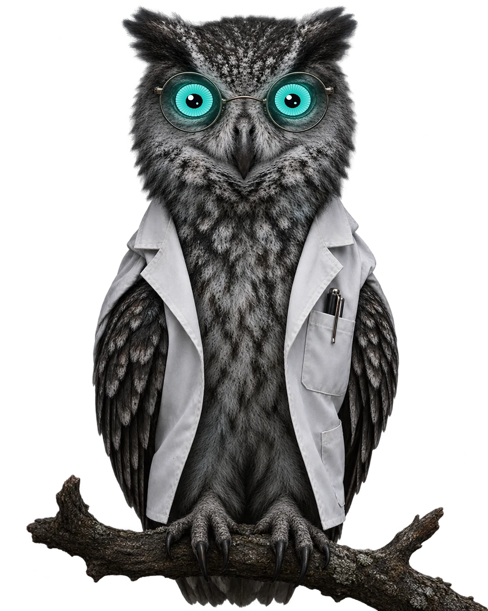

Khóa luận tốt nghiệp · Khoa học dữ liệu · ĐH Công nghiệp TP.HCM
Phát hiện ảo giác cho LLM tăng cường truy xuất tiếng Việt dựa trên tín hiệu chú ý nội tại
Nguyễn Ngọc Lân · Nguyễn Tấn Minh · GVHD ThS. Trương Vĩnh Linh

01
Nền tảng · hoạt ảnh lặp
Một token trả lời nhìn về đâu trong ngữ cảnh?
Tỷ trọng chú ý rơi vào từng đoạn — đây là tín hiệu đề tài khai thác, không cần LLM giám khảo.
Cơ chế đo ở E06: đoạn được nhìn nhiều nhất trùng đoạn bằng chứng 87,8 %
02
Phương pháp · dựng một lần rồi dừng
Một lượt đọc, không sinh token mới
1
Ghép prompt
Chat template Qwen, chốt một lần ở T07.
2
Đọc lại
Qwen2.5-7B NF4 · float16 · bỏ lớp 27.
3
Hook trong lớp
Cộng chú ý theo đoạn, xóa ma trận ngay.
4
Đặc trưng
Tỷ lệ gộp + 5 đại lượng hình dạng.
5
Hồi quy
579 tham số, khớp vài giây trên CPU.
Giữ cả 28 lớp (ngây thơ)26 GB
Nguồn: CLAUDE.md §5; T07–T08 — ma trận chú ý 0,94 GB một lớp ở 4.096 token
03
Kết quả · CH1
0
macro-F1 chunk-aware trên ViHallu, khoảng tin cậy [0,724 – 0,789]
ECE 0,044 — hiệu chỉnh xác suất tốt nhất bảng
579 tham số so với 560 triệu của XLM-R
Nguồn: Bảng 1, docs/EXPERIMENTS.md — test 700 mẫu, khoảng tin cậy rộng ≈ 0,065
04
Phần 6 · Kết quả
Mắt không
nói dối.
Năm phép đo độc lập, một câu trả lời — và một điều chỉ tỷ lệ gộp không cho được.
05